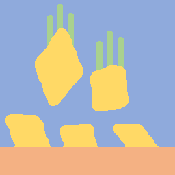

Changelog
Latest
Added
The tree plugin can now filter content based on a search field.
In Debug mode, items from the Tree can be added to the Console
 .
.Added option to liveDisplays to toggle between automatically or manually scaling the x axis.
Integrated generating and running python plot code for tests of devices, scans, and displays.
Introduced log level ‘Trace’ which shows detailed device communication info if implemented by device.
Tests now write a log to a dedicated file in the current session path.
Added log level setting to determine level of information in logs.
Added some pauses during testing if GUI gets too busy.
In advanced
 mode of Settings
mode of Settings  , the error count for controllers of devices and channels is now shown.
, the error count for controllers of devices and channels is now shown.Input channels are now shown in the channel list of scans.
Added icons to change log and documentation.
Input and output messages from console
will now appear in terminal and log file.
{kind=link}
{kind=link}
{kind=link}
Changed
Added confirmation prompt before deleting all device history.
Simplified instructions for offline installation. No conda or python installation needed on offline PC!
Disallowed use of / in channel names.
In liveDisplays, the mouse enabled mode of subplots is now linked.
Data files are now only saved while closing if new data has been recorded since starting the program.
While testing, images are written to files instead of clipboard for later inspection and to not spam the clipboard.
Fixed
Fixed error when canceling loading a file from DeviceManager.
Changing channel limits will now also update referencing channels (e.g. in UCM or PID).
Fixed liveDisplay copyClipboard function.
Scans will now append session notes to scan notes. Used to be notes of current directory in explorer.
Fixed update of colors of in linked channels.
Fixed issue with scans starting even through output channels were not recording.
Fixed an issue with uninitialized scan plots after changing scan channels.
Fixed update of channel values in interactive mode of Omni scan.
Fixed issue where channel equations tried to access backgrounds for channels that do not use backgrounds.
Preventing error when changing directories to fast by ignoring double click while loading.
Fixed an issue where the data type of channel values would be changed to float64 when extending the dynamic numpy array.
Instead of reloading plugins, the application performs a clean restart. This is to avoid memory leaks from incompletely closed plugins.
Removed
Removed option to turn of logging.
Developer Notes
Simplified plugins by introducing default implementations of DeviceController.values, DeviceController.applyValue, DeviceController.updateValues, DeviceController.initComplete, DeviceController.toggleOn, Channel.applyValue, Device.closeCommunication, and Device.setOn. Custom plugins need to be adjusted by deleting or simplifying functions to use default implementation!
Fixed sequence for extending DeviceController.closeCommunication. Adjust custom plugins based on documentation and examples!
Changed implementation of initScan. Extend addInputChannels instead.
Abandoned use of :meta private: where it was overwriting the docstring of a parent method.
Added documentation for many methods.
generatePythonPlotCode method now only returns text. When running generated code from the context menu, other plots are no longer changed into popups.
Removed unused getInitializedChannels method.
Restructured project structure to separate scans and displays. Using lower case convention for project folders and module files. Enabling simplified import statements, e.g.: from esibd.scans import Omni, from esibd.devices import ISEG, from esibd.scans import Beam, from esibd.displays import PDB.
Introduced restore option for parameters and settings and used it to not restore values for lagging, errorCount, and interval measured.
Removed option to edit indicators through the context menu.
Enabled context menu for LedIndicators.
Added type hints and improved consistency of formatting.
Replaced EsibdConst and EsibdCore with esibd.const and esibd.core
Completed type hinting and implemented multiple improvements suggested by ruff.
Removed aboutFunc argument from finalizeInit.
Renamed _parent to more descriptive name in DeviceController, TimeoutLock, PlotItem, PlotWidget, Parameter, Setting.
Renamed _min, _max with minimum, maximum for Setting, Parameter, and DynamicNp.
Renamed _from and to in scans to start and stop. Change does not affect user interface and files.
Renamed PluginManager.TYPE to PLUGINTYPE.
Renamed Parameter.TYPE to PARAMETERTYPE and widgetType to parameterType.
Renamed outputs to outputChannels and inputs to inputChannels for scans and staticDisplays.
Renamed scan.run to scan.runScan
Removed acquiring argument in DeviceController.runAcquisition. Use self.acquiring instead.
Renamed QLabviewSpinBox, QLabviewDoubleSpinBox, QLabviewSciSpinBox to LabviewSpinBox, LabviewDoubleSpinBox, LabviewSciSpinBox.
Merged deviceController.device and deviceController.channel into deviceController.controllerParent.
Renamed channel.device to channel.channelParent.
Added type hints and refactored code based on type checking.
Performance
Improved GUI responsiveness handling: Data is still appended but plots are skipped if needed.
Scans and devices will pause if the GUI gets too busy. Scans will wait for previous scan step to be processed if necessary.
Version 0.7.3 2025-03-24
Added
Added icon legend in about dialogs
 .
.Added Calculator plugin as an example of embedding external GUI applications as plugins.
Running scans will be indicated by icons in the DeviceManager.
Added lagging indicator in advanced mode of device settings.
Added option to filter warning and error messages in the Console
.
{kind=link}
Changed
Improved the definition of the channel properties active and real in the documentation.
Treating file types not case sensitive.
New icons for msScan and MS.
Simplified TIC plugin implementation by inheriting from OMNICONTROL.
Made layout more stable by preventing floating of Console
, Settings , and Browser .Some development specific settings are now hidden by default and only visible in the advanced mode
of the Settings plugin .Channel backgrounds are only displayed and used for channels that are enabled, active, and real.
Scans will warn and not start if scan limits exceed limits of scan channels.
{kind=link}
Fixed
Fixed assignment of values to virtual channels in test mode for several internal plugins.
Improved colors of displays when copied to clipboard or saved as pdf.
Renaming of settings is handled like any other setting change, triggering appropriate events.
Restoring backgrounds after moving channels.
Performance
Tolerating more device interval deviation and skipping plotting and data recording if needed to make application more responsive and stable when using close to maximum resources.
Version 0.7.2 2025-03-02
Added
Added update information on starting screen.
Added option to show an overview of all icons (enter Tree.iconOverview() in Console
).Added Error count setting for devices to stop communication after multiple consecutive errors.
Added option to highlight mouse clicks.
Added offline installation instructions.
Added option to run python files from explorer context menu.
Added options to load all device values from file context menu instead of one device at a time.
Added option to load all device channels and values from advanced mode
of DeviceManager  instead of one device at a time.
instead of one device at a time.Added simple video example to the documentation.
{kind=link}
{kind=link}
Changed
Using plugin names more consistently in tooltips.
Using explicit tooltips for linked channels in UCM, PID, and scans.
Reintroduced start recording and subtractBackground actions for live displays (linked to corresponding action in parent Plugin).
Fixed
Fixed scaling when copy image to clipboard in live displays.
Updating linked channels when renaming source channels.
Dialogs stay on top of all windows.
Fixed help dialog for displays.
Removed
Removed display time control for device manager (use UCM to see multiple channels with consistent time).
Version 0.7.1 2025-02-08
Added
Added change log to readthedocs.
Added Linux installation instructions.
Generalized opening files and storing settings to work on Linux.
Limiting valid characters for channel names.
Adding messages emitted during initialization to Console
.Added itemFile and itemFileDark to simplify specification of icons and show icons in PluginManager.
Added program info to plugins.ini
{kind=link}
Changed
Removed checkbox for non optional plugins in plugin dialog.
Prevent DeviceManager from moving or floating.
Disable navigation icons in explorer while loading directory to avoid inconsistent behavior.
Plugin dialog
 can now be accessed while devices are communicating. Communication will only be stopped when reloading plugins.
can now be accessed while devices are communicating. Communication will only be stopped when reloading plugins.Improved formatting of values in .ini files and change logs.
Prevent loading of channels while recording.
PICO only loads SDK if user has explicitly enabled this plugin.
Using dark mode background instead of black for scans.
Devices only store data regularly if they are actively recording new data.
Waiting for scans to finish when closing.
UCM
 , PID , and Scan channels show background corrected values if applicable.
, PID , and Scan channels show background corrected values if applicable.Depo scan  is using color of selected current channel.
{kind=link}
{kind=link}
{kind=link}
Fixed
Reconnecting source channels after loading device configuration.
Fixed error caused by missing console history file.
Fixed repeated plotting when loading scans.
Fixed scan channel initialization for Depo Scan.
Removed display parameter for other scans.
Fixed incomplete status messages
RSPD3303C only sets values for enabled channels.
{kind=link}
{kind=link}
Version 0.7.0 2025-01-19
This version brings multiple improvements to the user interface and messages. The main new features include the Universal Channel Manager (UCM ), PID Plugin , and a channel interface for scans. The data and config file formats remain unchanged. The plugin file format is significantly simplified but requires adjustments (see below) to use old plugins with the current version!
Added
Universal Channel Manager (UCM
) plugin: This plugin allows to reference arbitrary channels from other devices to create a central list of the most important information. All referenced channels can be controlled from here. The corresponding display allows to see recorded data from multiple devices in one central location. For most users this should result in improved performance and less complexity as the individual device tabs and corresponding displays will rarely be needed once the channels in the UCM are configured.PID Plugin : Allows to establish a PID control loop between two arbitrary channels.
Added option to collapse channels of same color to focus on the most relevant channels.
Channels now allow to change Line Style and Group for plotting.
Channels now allow to change Scaling to highlight important channels (and to see them from the other side of the lab!).
Added channel interface for scans.
Depo scan can now record data from arbitrary additional channels.
Added option to inspect the object currently in the Console input.
Option to use icons instead of labels in tab bars (active by default).
Live Displays allow to sort plot curves by device, unit, or group (new channel parameter), and arrange them horizontally, vertically, or stacked.
Added plugins for KEITHLEY 6487, GAA MIPS, NI9263, Pfeiffer Omnicontrol, RSPD3303C, and pico PT-104.
Added option to generate plot files for displays including MS, Line, PDB, Holo.
Plugin Manager now shows the supported version of plugins and highlights if they are compatible with the current program or not.
{kind=link}
Changed
Plugin format: Much of the functionally has been moved to the base class allowing developers to use standard functionality by using a flag (useMonitors, useDisplays, useBackgrounds, useOnOffLogic) instead of implementing it in the specific plugin file. Some functions have been renamed to be more descriptive and consistent. Most important examples are: stop -> closeCommunication, init -> initializeCommunication, apply -> applyValues. Make sure to compare to build in examples and test your plugins when updating your custom plugins for the current version. Documentation in CustomDevice has been improved to demonstrate and explain the current plugin format.
Logging is now enabled by default. More informative status, warning, and error messages. A lot more messages in debug mode.
Using icons for messages, warnings, and errors in status bar, log file, and Console
Old logs are regularly removed from the log file
Reorganized internal device plugins in dedicated folders
Temporary parameters like monitors or other device states are now saved but not restored.
Parameters that are undefined before communication to the corresponding device is established are set to NaN to emphasize that there is no up to date value available.
Deprecated
Splitting Pressure plugin into dedicated TIC and MAXIGAUGE plugins. If necessary channels can be combined using UCM. Pressure plugin is now deprecated and will be removed in the future.
Fixed
Replaced deprecated
numpy.bool8withnumpy.bool_Various minor bug fixes
Performance
Various performance improvements
Improved speed and stability of tests. Time is logged during testing if in debug mode.
Version 0.6.18 2024-06-10
Added
Tree.inspect now shows values if applicable
Console restores history of used commands after restart
Introduced setDisplayDecimals to customize display of floats including scientific notation
Added variable aspect ratio option for beam scan (varAxesAspect in autogenerated plot file)
Added new scan mode “Spectra” for a series of 1D spectra based on Beam scan
Added new UI tool MultiStateAction
Added dedicated channelPlot to display channel data instead of using Line plugin
Added msSpectra mode for simple mass spectra
Added PluginManager.testing flag to avoid interaction of parallel testing thread with UI dialog boxes leading to rare crash during testing
Changed
Communication has to be stopped before channels can be moved (increase stability)
Default ini files are scanned for changes when closing and only overwritten if necessary
Using last 10 s instead of last 10 data points to define background signal
Scans now respect the subtractBackground states defined by the devices of the relevant channels
Virtual channels do not need to be active to be included in scans
Fixed
Update to pyqtgraph==0.13.7 after replacing deprecated api
Performance
Plotting performance improved by reusing figures (figure recreation still needed if theme is changing)
Version 0.6.17 2024-03-18
Added
Added popup to show errors while importing plugins (before the Console plugin is ready to display those errors.)
Added Smooth parameter to all channels to reduce noise using running average.
Changed
Live displays are visible by default
Test mode active by default
Stop all communication and recording from DeviceManager, now requires explicit confirmation
Added warnings for output channels that are not enabled, or their device is not initialized or not recording
Pressure plugin: init TIC and TPG decoupled so you can use it with only one of them or both.
Removed
Removed explicit save of settings on program termination (settings are saved in real time)
Version 0.6.16 2023-12-17
First stable release on pipy
Added
the deposition plugin now shows a checklist for validation before it starts recording
added option to use dark or light theme when copying graphs to clipboard
added getting started section in docs
added PluginManager.showThreads() function for debugging
added minimal support to restore plugin dimensions after restart
added exponential temperature change for Temperature plugin in test mode
added option to reset local settings using python -m esibd.reset
Changed
channels can now only be enabled and disabled in advanced mode
live displays are now visible by default after initial installation
Fixed
acquisition is no longer stopped when loading scan or device settings
added input validation of session path
fixed issue with autoscaling in static displays
Performance
increased speed of TIC pressure communication by using correct EOL character
Version 0.6.14 2023-11-07
First release public on PyPi
Version 0.6
This is the first public version. All changes relative to this version will be documented in future releases. Note, the file formats have not been altered or altered in a backwards compatible way that automatically adds default values for parameters that do not exist in old files.
Added
standalone installer available for windows
Changed
internal plugins are kept in the program folder and may be affected by updates. Users can specify a plugin path and add custom plugins, but are responsible to maintain them.
Complete overhaul of user interface and docking system.
Version 0.5
Update notes: For a save update, backup and remove all files from your config folder. These files will be automatically generated in the correct format. You may then adjust them as necessary based on your backed up files, while sticking to the new format. All device and display code is now organized as plugins.
Version 0.4
Update notes: You need to delete settings.ini and config.h5 from your settings folder. Updated versions will be generated on the first start after the update. You can then manually restore your settings. In the future, file format changes during updates will be automated. In this release, the definition of lens and name in the current tab were changed to name and deviceName to increase consistency. Please adjust your settings accordingly after the first start.
Added
Added “Depo” tab to display and document deposition.
Added “Move to Recycle Bin” feature to explorer items.
The device configuration can be exported directly to the current session.
The most common current plot functions are now directly attached to the current plot and always accessible. In addition, the voltage button moved here to indicate the voltage status at all times and allow quick access in case of an emergency.
The position on the 2D scan is indicated by a cursor.
The manual can be accessed from the Help menu.
The optimization progress is shown in a dedicated tab while running.
Color bar for 2D scans is labeled.
Added custom device tab example. See new section in documentation for details.
The Testmode can now be activated directly from the settings menu and stays active if the application is restarted
All device settings are saved together with the measurement data in a single .h5 file. Values can be loaded by right clicking the file or importing from the corresponding device tab.
Changed
Result of mass analysis is shown in plot.
The initial signal is used instead of 0 to initialize 2D scans, making to displayed color range more useful.
Background subtraction is active by default, though there is no effect until backgrounds are defined.
More content is dockable.
Devices will now generate default .ini files if no file is found. This can be useful to make sure the files are valid before populating them with additional channels.
Settings are saved directly, not just when exiting program.
The performance and error messages of the equation evaluation routine have been improved. Standard math functions can be used and there are no special requirements for spaces or brackets.
Fixed
Combo boxes can no longer change accidentally by mouse wheel scrolling.
Fixed live update of min max limits for voltage channels.
Scans cannot be started before the previous scan has been saved.
Made sure that potentials are reset to initial values before scans are saved.
Displays and channels are no longer overwritten when loading scan settings. Instead, only non existing items from the file are added to the present list.
Current channels are reset and removed from plot when disabled by the user.
The file labels on top of figures are scaled to the figure width to be always visible.
Changing the display channel during and after scanning is now more reliable.
Mass spec data display interpolates data before down sampling for more accurate display.
Performance
Explorer will only index files as the tree is expanded.
If possible, scan plots only update data to improve performance.
Version 0.1 2022-03-08
Fist version used in the ESIBD lab.